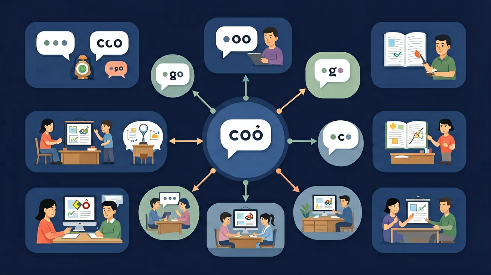

🌍 And（已知）：我们已经有了一定的基础知识
⚡ But（问题）：但还有一个重要概念需要深入理解
💡 Therefore（新知）：因此通过本节课的学习，我们将掌握新知识并能灵活运用
三年级 · 5个元音字母 · 多彩发音世界 🌈

🎵 元音是英语发音的"核心"！
每个英语单词至少有一个元音 ✨
5个元音字母：A E I O U
a apple → E elephant → I ice → O orange → U umbrella
把单词拖到含有该元音字母的格子里！
💡 常见错误往往就在细节中，仔细检查每一步！
Can you recall the key words or rules from this lesson?
Explain in your own words what you learned today.
Use today's knowledge to make a new sentence or example.
Compare this to something you already know. How are they similar or different? Can you create your own example?
先独立作答，再点选项查看对错与错因。
下列单词中，哪个单词的元音发音与‘cat’中的‘a’发音相同？
下列单词中，哪个单词的元音发音与‘bee’中的‘ee’发音相同？
下列单词中，哪个单词的元音发音与‘dog’中的‘o’发音相同？
单词‘____’中的‘a’发短元音/æ/。
答案：cat
‘cat’中的‘a’发短元音/æ/，符合题目要求。
单词‘____’中的‘i’发长元音/aɪ/。
答案：kite
‘kite’中的‘i’发长元音/aɪ/，符合题目要求。
下列哪个单词中的元音发音与其他三个不同？
请同学们观察下列单词，找出其中的元音发音规律。
❓ 为什么字母A在apple和cake里发音不一样？
❓ 什么时候元音字母会发字母本音？
❓ 怎么记住e在bed和Pete里的不同发音？
学完这一课，这些问题你都能自信地回答。
🎯 能说出5个元音字母的短音发音规则
🎯 能判断CVC结构中元音的发音类型
🎯 能分析silent e对元音发音的影响
把单词拆成CVC结构看中间元音
元音在闭音节发短音，开音节发字母本音
对比cap/cape, pet/Pete的发音差异
用颜色标记单词中的元音字母
把规则应用到新单词如kit/kite
✅ 特殊记忆have是短音
💡 过度推广silent e规则
✅ 对比bed/bad的嘴型差异
💡 汉语拼音干扰
口诀：闭音节短，开音节长，silent e在后面帮
类比：元音像弹簧，被辅音压住就发短音，放开就弹回长音
And：学生已认识字母A的短音/æ/
But：发现字母E能让A变音却不出声
Therefore：理解silent E改变元音发音的规律
当单词以『元音+辅音+E』结尾时（如cake），结尾的E是沉默小助手，它会让前面的元音发字母本音。比如cap中的A发/æ/，加上E变成cape后，A就变成/ei/发音，就像数字8（eight）里的A一样。注意E自己不发音哦！
🌍 看路牌时，STOP是短音，加上E变成STOPE（矿区）就发长音；买尺子时，ruler的U发/u:/就因为有E帮忙。
哪个单词的A发字母本音？
And：知道单个元音有长短音区别
But：分不清何时发长音
Therefore：掌握长短音切换规则
元音长短音就像弹簧：没有E压住就弹很短（如sit的i发/ɪ/），有E拉住就变长（如site的i发/aɪ/）。比如数字5（five），i被结尾E拉着发长音，而6（six）没有E就短促。记住结构：短音=元+辅，长音=元+辅+E！
🌍 宠物店看到pip（小鸟叽喳声）是短音，pipe（水管）有E就变长音；医院里clip（夹子）和clipe（方言词）发音也不同。
kit加上E变成kite后，i的发音？
And：理解E改变前面元音的规律
But：遇到多个元音时易混淆
Therefore：识别E在复合元音中的特殊作用
当两个元音字母在一起时（如boat的oa），E小助手会隐身！但结构最后出现E，它仍然会帮忙。比如pie里的ie发/aɪ/，加上E变成pier后仍然读/ɪə/（就像数字4-four里的our）。但rain有ai就不需要E帮忙啦！
🌍 吃pea（豌豆）时E让ea发/i:/，但peach有a就不需要E；看到sea（海）和seal（海豹）的ea组合发音不同。
哪个单词的E真正改变了发音？
And：掌握了E的基本规律
But：遇到特殊单词会出错
Therefore：培养观察例外的敏感性
英语里有调皮的特殊单词！比如have看起来该发heiv（像cave），实际读/hæv/；give不是give而是/gɪv/。但同类词dive就遵守规则读/daɪv/。就像数字7（seven）的第二个e不发音。记住常见特例，其他都按规律读！
🌍 写字时live（居住）读/lɪv/，但drive就发/draɪv/；超市love和glove都特例读短音。
以下哪个是规则发音的？